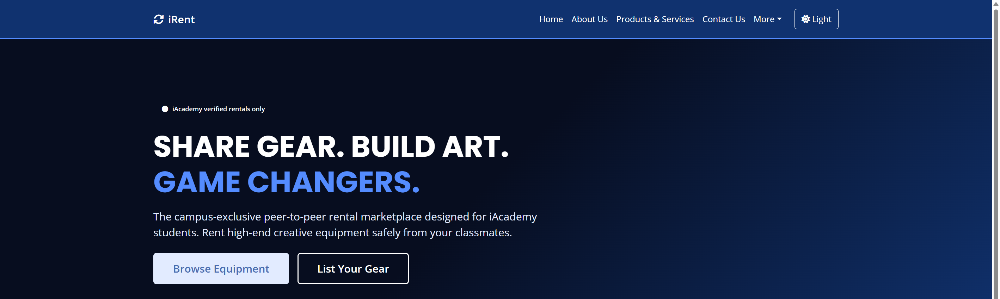
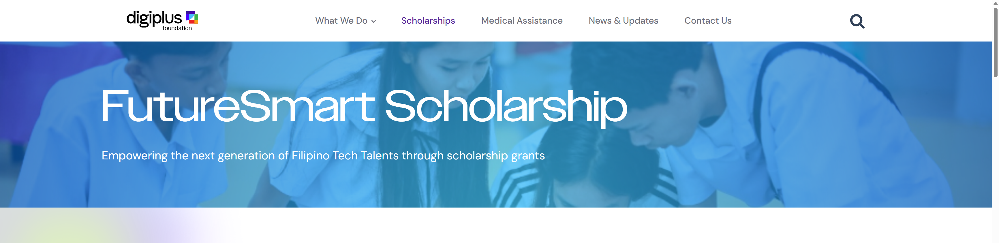
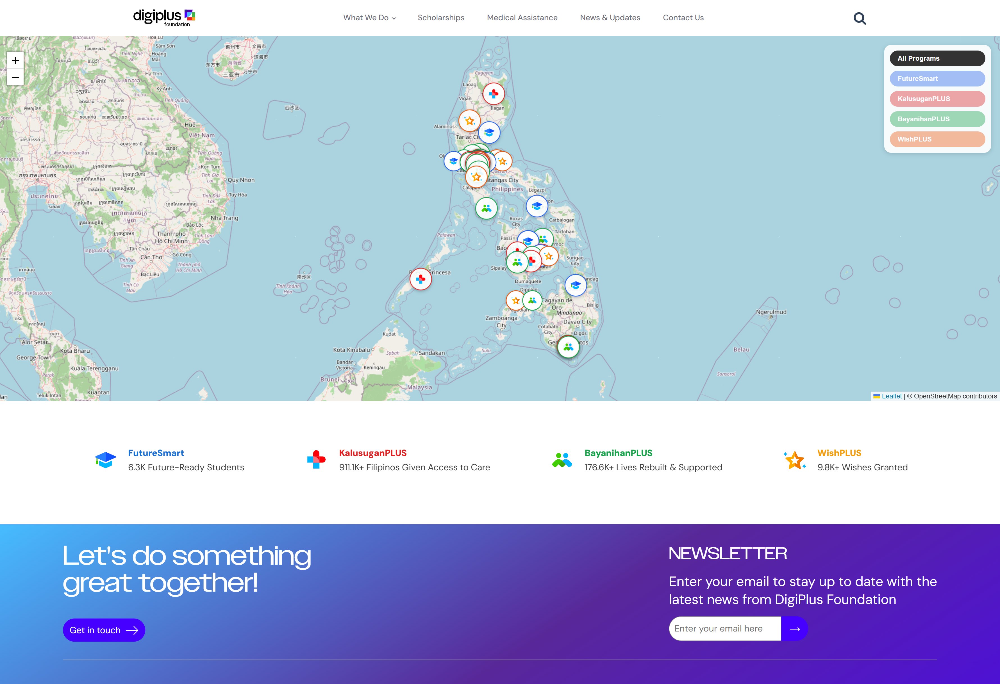
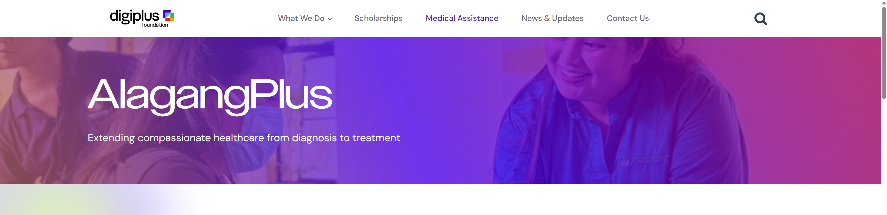
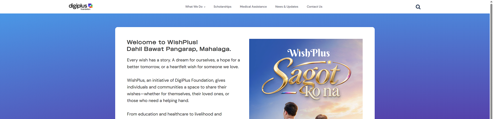
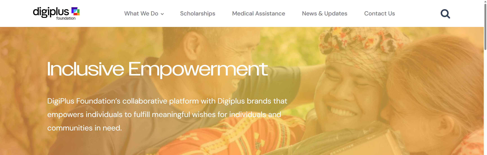
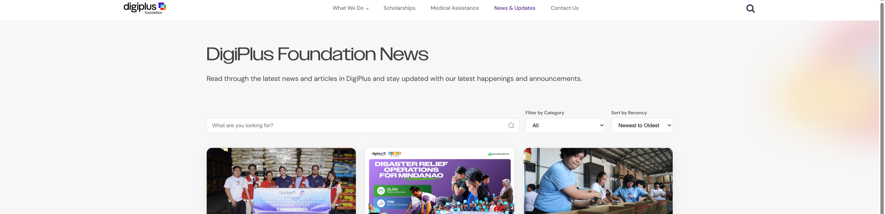

Featured Projects

iRent (Academic Project)
May 2026 – Aug 2026
- Built a responsive campus rental web app using HTML5, CSS3, Bootstrap 5, and JavaScript to help students share gadgets and equipment.
- Integrated Google Analytics 4 (GA4) to track site traffic, user interactions, and page views as part of a Web Analytics course project.
- Designed a smooth user interface featuring a dark/light mode toggle that remembers the user's view preference, along with interactive equipment carousels using SwiperJS.

FutureSmart Scholarship Form
September 2026 – September 2026
- Designed and built responsive front-end layouts for the scholarship landing page and application portal using Oxygen Builder.
- Integrated Forminator for multi-step application forms and customized Easy Accordion for clean FAQ and eligibility guidelines.
- Integrated front-end form interfaces with backend data workflows in coordination with the IT team and supervisor.

Impact PH Map
September 2026 – October 2026
- Built an interactive map using Leaflet.js and JavaScript to visualize 45+ community programs across the Philippines.
- Developed a custom WordPress shortcode (PHP) with a CSV-driven data pipeline for easy spreadsheet updates by non-technical staff.
- Implemented multi-category filtering, custom branded markers, auto-geocoding via Nominatim API, and mobile-responsive layouts.

AlagangPlus – Medical Assistance Portal
October 2026 – October 2026
- Developed responsive front-end layouts for the medical assistance portal using Oxygen Builder, ensuring accessible navigation for applicants.
- Configured multi-step application forms via Forminator and structured medical requirements and FAQs using Easy Accordion.
- Collaborated with the Healthcare Team, Communications Team, and supervisor to align medical guidelines, public messaging, and form workflows before launch.

WishPlus: Sagot Ko Na! – Wish Submission Page
October 2026 – October 2026
- Built a dedicated wish-entry page for WishPlus: Sagot Ko Na! using Oxygen Builder, separating the beneficiary submission flow from the main Inclusive Empowerment page.
- Structured a streamlined user journey (Home Page → WishPlus → Wish Entry) featuring interactive category selection cards for Education Wish and Healthcare Wish to route applicants to the appropriate assistance portals.
- Collaborated with the Communications Team and supervisor to align program messaging, branding assets, and accessible navigation prior to launch.

Inclusive Empowerment Page (Revamped)
October 2026 – October 2026
- Revamped the Inclusive Empowerment page using Oxygen Builder, implementing a structured two-column layout pairing program branding and descriptions with horizontal image carousels.
- Updated front-end sections and visual assets for DigiPlus Foundation’s core initiatives—WishPlus (community outreach), The Good Zone (child nutrition and feeding program), and Champion’s Hope (youth sports development).
- Coordinated with the Communications Team and Tech Education Team to gather, format, and publish approved program copy and featured photos.

DigiPlus Foundation News & Updates
August 2026 – Present
- Managed ongoing article publishing and content updates for the DigiPlus Foundation News & Updates section using WordPress CMS.
- Formatted blog layouts, featured images, and metadata to ensure visual consistency, readability, and mobile responsiveness across published stories.
- Collaborated closely with the Communications Team to review, schedule, and deploy approved press releases and CSR feature articles.

BingoPlus App Charity Page – Project Coordination, Impact Auditing & Release Tracking
August 2026 – Present
- Managed and updated a centralized tracking system in Lark to reconcile real-time field operations (Education, Disaster, Food, Medical, and Classroom initiatives) against live in-app statuses (Preparation, Ongoing, In Progress, Completed).
- Coordinated across program teams (TechEd, Healthcare, and Resilient), Brand & Communications, and the BingoPlus Product and Back-End teams to gather visual assets, resolve status discrepancies, and deploy timely project updates to the live Charity Page module.
- Audited in-app Impact Points, program dates, and progress indicators across CSR initiatives, consolidating findings into status reports presented directly to the Brands and Communications Manager and Executive Director.